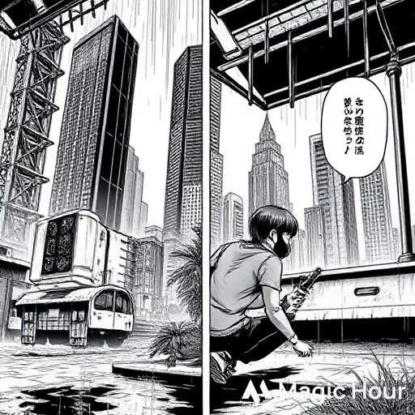
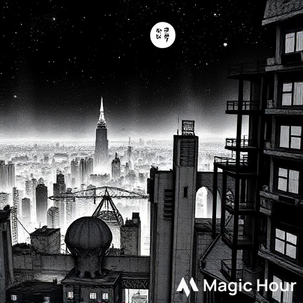
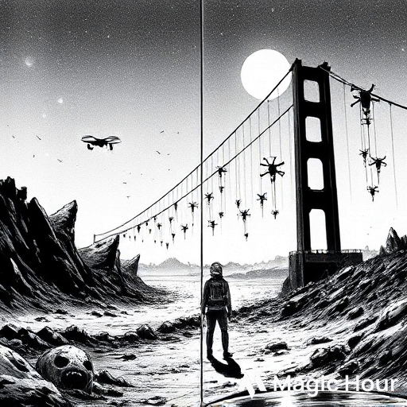
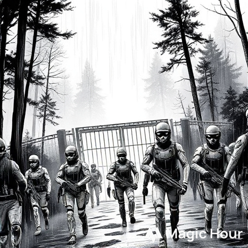
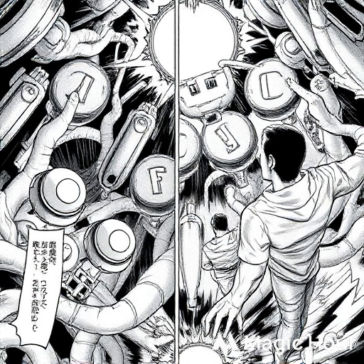
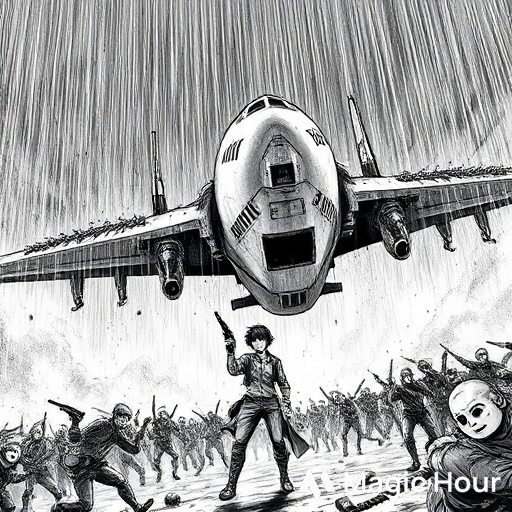
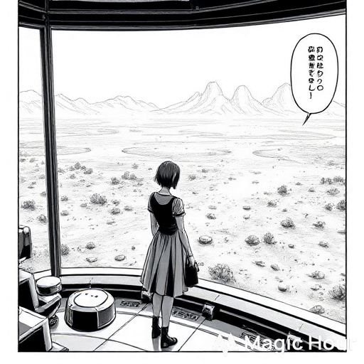

🥷 Manga Title: APOCALYPSE
Genre: Action • Apocalypse • Adventure
Chapter 1: The City of Ash
The city once called Neo-Tokyo now sleeps beneath layers of ash and silence. Skyscrapers bow to gravity, their bones snapped by time.
Roads crack open like veins, oozing rust and weeds. Every sound—every whisper of wind—feels like a scream that forgot how to die.
Rin moved like a ghost between wrecked cars, his gas mask fogged with breath. The black rain had returned that morning,
falling in slow, oily drops that hissed when they hit the ground. He’d seen what it did to skin. What it turned people into.
He checked the ammo in his pistol—two bullets left. Enough for mercy, not for war.
Inside an abandoned subway station, he found her.
A girl. Late teens. Kneeling beside a radio rig powered by a cracked solar cell. Her brown hair tied back with a bloodied ribbon,
her jacket torn at the sleeve.
“Stay back,” Rin warned, raising his gun.
She didn’t even flinch.
“You’re wasting bullets. They’re attracted to sound.”
Her voice was calm, almost bored. That annoyed him more than it should have.
“What are you doing here?” Rin asked.
“Trying to find someone,” she said, twisting a dial on the radio. “My brother.”
Rin almost laughed. Nobody found anyone anymore.
Then, through the static, the radio stuttered to life:
“––The Cure Exists.––Sector Seven––Alive––”
Her eyes lit up. “Did you hear that?”
Rin hesitated. The word cure had become myth—like heaven or home. But for the first time in years, he wanted to believe.

Chapter 2: The Hollowed
Night in Neo-Tokyo wasn’t dark. It glowed—with bioluminescent fungus spreading across the ruins,
and the faint shimmer of Hollowed eyes lurking in alleys. The infection didn’t just rot the flesh; it reanimated it, twisted it. They moved like marionettes on invisible strings, their faces frozen mid-scream.
Rin and the girl—Eli, she said her name was—camped in the top floor of a half-collapsed tower. Rin ate canned beans;
Eli barely touched hers, staring instead at the horizon.
“You really think there’s a cure?” Rin asked.
“I know there is,” she said. “My brother worked for Helix Corp—the people who started all this. Before everything fell,
he sent me a message saying he had something that could fix it.”
“Helix Corp’s dead.”
“Maybe,” she said softly, “but he’s not.”
Outside, a Hollowed shrieked. Rin froze, pistol drawn. But Eli didn’t move. She just closed her eyes and whispered something under her breath.
A prayer—or a memory.
Rin realized then—she wasn’t naïve. She was holding onto hope like a weapon.
And maybe… that was what scared him most.

Chapter 3: Dead Roads
They traveled on foot for three days through the wastelands beyond the city. The roads were littered with burnt-out drones,
old military checkpoints, and bones picked clean by scavengers. Sometimes, they saw other survivors—none worth trusting.
One night, they found an old highway bridge half-collapsed into the river below. A dozen Hollowed dangled from it,
tangled in cables, twitching in endless death.
“Helix Sector Seven should be north,” Eli said, checking her cracked wristpad.
Rin grunted. “And what then? We find your brother, he gives us the cure, and everyone just stops being monsters?”
“He’s a geneticist,” she said. “He told me the virus wasn’t meant to kill people—it was meant to evolve them.”
Rin stopped walking. “You mean this—” he gestured toward a Hollowed thrashing in the mud “—was evolution?”
Her silence was answer enough.
That night, he couldn’t sleep. The sound of the infected carried on the wind like a lullaby gone wrong.
And somewhere beneath that—he swore he could hear the whisper of rain.

Chapter 4: The Signal
They reached the outskirts of Helix’s old facility—a fortress swallowed by forest and mist. The air reeked of decay and burnt oil.
The main gate bore a faded logo: a serpent coiled around a DNA strand.
As they approached, the radio on Eli’s belt crackled again.
“––Eli... if you’re hearing this... don’t trust the ones in white.––”
It was her brother’s voice. Weak. Strained.
She froze.
“Rin,” she whispered. “He’s alive.”
But before they could react, lights flashed in the trees.
White-armored soldiers surrounded them—clean suits, glowing visors, Helix insignias still bright as snow.
“Hands up!” one shouted. “Sector Seven is restricted territory!”
Rin’s instincts screamed trap. He fired first.
Bullets tore through the mist. Eli hit the ground, covering her head. When the noise died, only the rain remained.
Rin was bleeding from the shoulder. One soldier lay dead. The others retreated.
Eli stared at him, horrified. “You didn’t have to kill him!”
He looked at her coldly. “If I hadn’t, we’d be dead.”
Something broke in her eyes that night—not just fear. It was trust.

Chapter 5: The Lab Beneath
They slipped inside the ruins through an old drainage shaft. Beneath the facility, they found what was left of the human race’s genius—and madness.
Cryo pods lined the walls, each filled with twisted half-human forms. The evolution Helix promised was a curse written in flesh.
And in the heart of the lab—Eli’s brother, Dr. Nathan Cole. Alive, but infected. His skin pulsed faintly with black veins.
“Eli…” he rasped. “You shouldn’t have come.”
She fell to her knees beside him. “You said you had the cure!”
“I had… the blueprint. But Helix changed it. They wanted control, not salvation.”
Rin stepped closer. “Then where is it?”
Nathan looked at him with hollow eyes. “In me.”
He pressed a syringe into Rin’s hand. “Take it north. To the skyport. There’s a lab still clean. Finish what I couldn’t.”
Eli shook her head, tears falling. “I’m not leaving you.”
But Nathan’s voice was already fading. “If you stay… neither of us survives.”
As his pulse stopped, alarms blared. The containment locks failed. The Hollowed stirred.

Chapter 6: The Last Flight
They ran through corridors flooded with smoke and screams. The infected poured in through vents and walls,
their bodies merging with wires and metal. Rin fought like a man possessed, the syringe clenched in his teeth.
At the surface, they reached an airfield—one aircraft still intact, a Helix dropship half-buried in vines.
Eli hotwired it, hands trembling. “I can fly us out—if we make it!”
“Then fly,” Rin said, firing into the horde.
As the engines roared to life, Hollowed leapt onto the wings, tearing metal apart. One claw slashed Rin’s mask, ripping it off.
He felt the rain sting his face—the infection creeping in through every cut.
Eli screamed his name. He grabbed her hand, forcing the syringe into her palm.
“Finish it,” he said, voice breaking. “End this.”
She tried to hold him, but he pushed her inside the dropship and slammed the door.
As it lifted into the storm, Rin stood beneath it—gun raised, surrounded by the Hollowed.
He didn’t fire. He just smiled.
Then the black rain fell.

Chapter 7: The Cure
Weeks later, the world was quiet again.
Eli stood in the skyport’s upper lab, overlooking the endless wasteland below. The sample from Rin’s hand—Nathan’s last gift—had worked.
A synthesized antidote. The Hollowed were dying out. Slowly. Painfully.
She’d saved the world.
But she couldn’t save him.
Every night, she replayed the last moment—the look in his eyes, the half-smile. Sometimes, when the wind howled against the glass,
she swore she could hear his voice.
“You finish it, Eli. You live.”
Outside, the first green leaf broke through the ash.
And in that fragile silence, the world began again.
